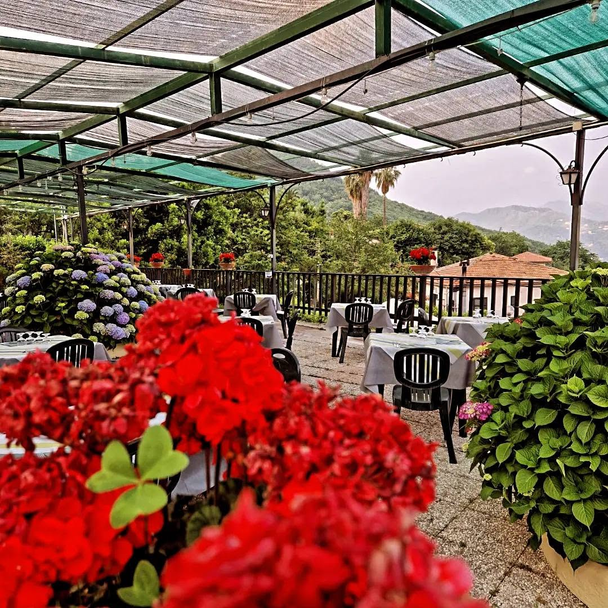
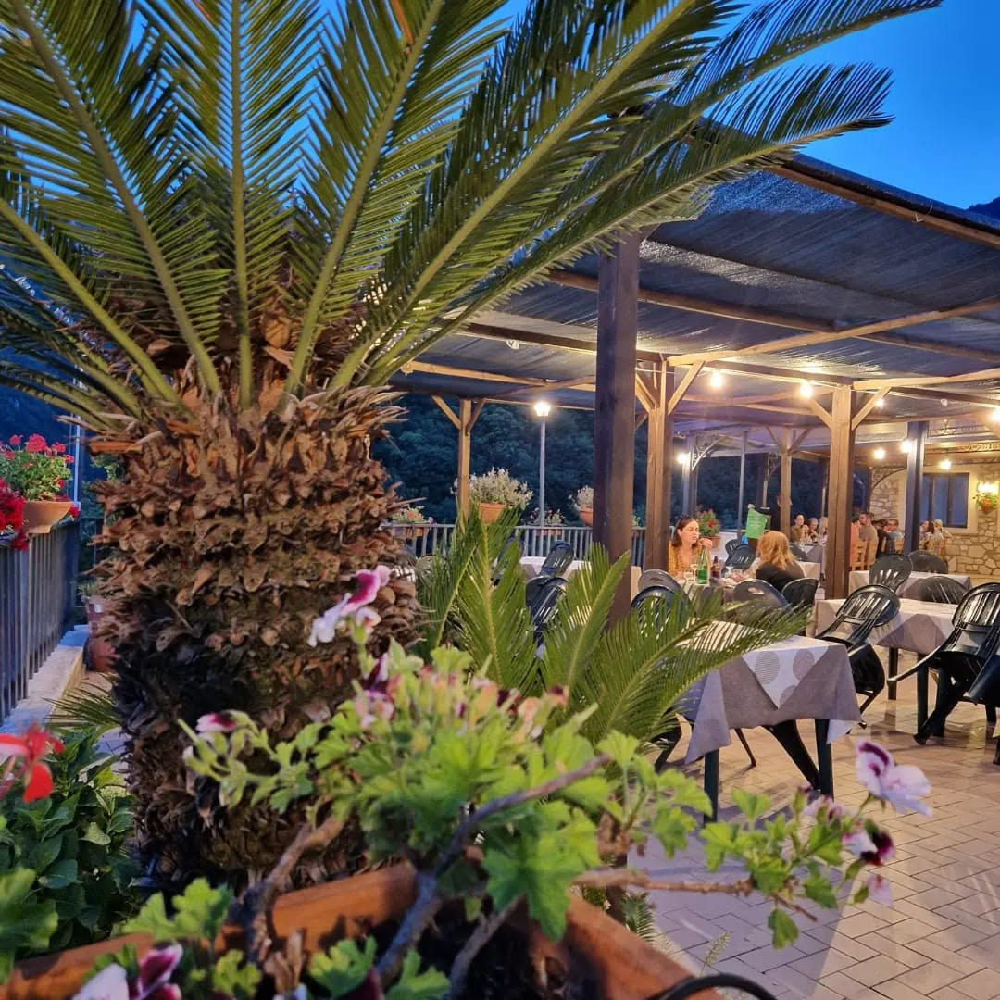
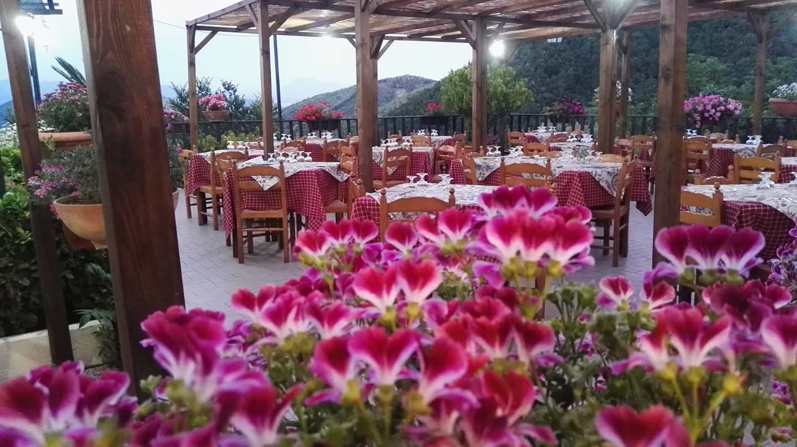
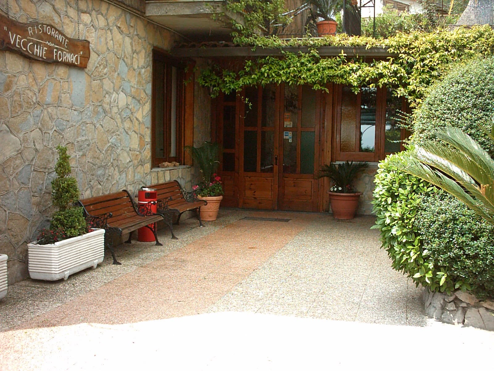
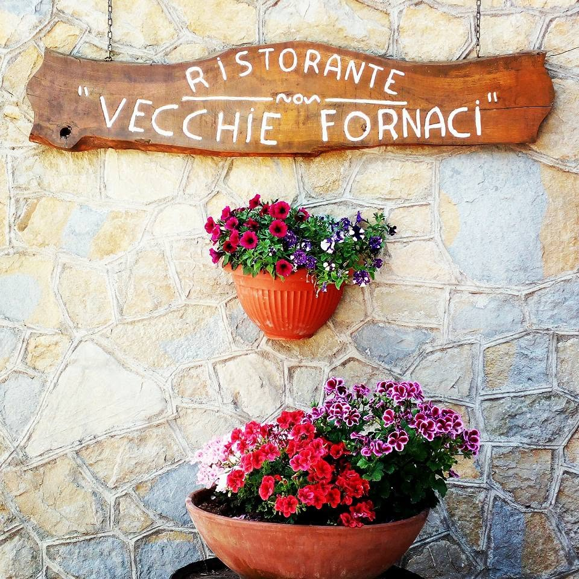
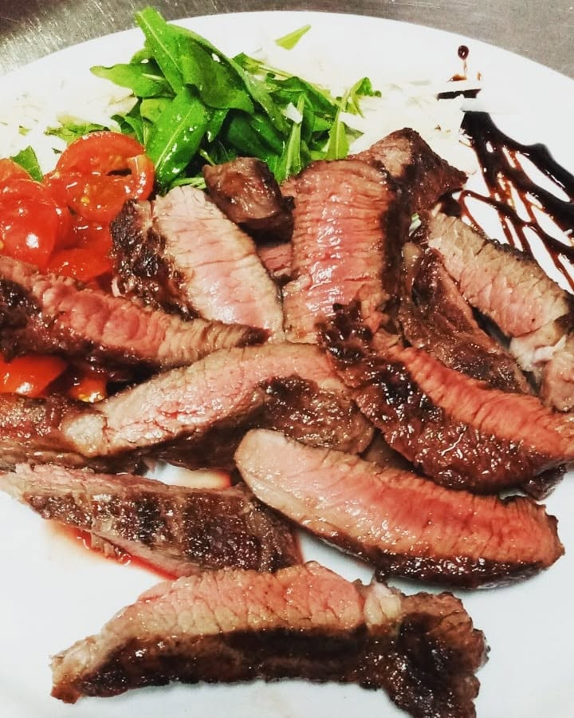
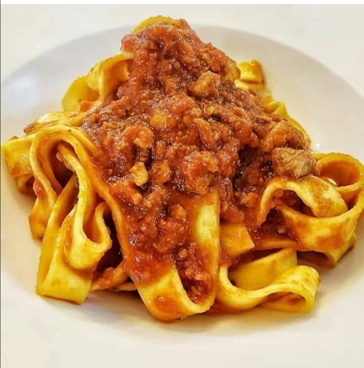
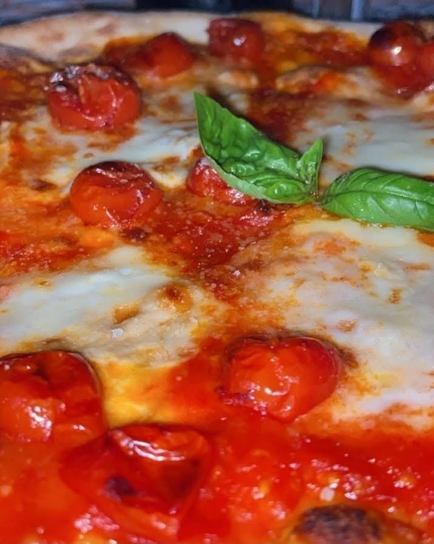

La nostra casa
Un angolo di campagna, un tavolo per voi.






Accomodatevi: a Corpo di Cava, tra le colline, si mangia come in famiglia. Brace, forno a legna e cucina genuina, da cinquant'anni.
Da noi non servono tante parole: basta sedersi, stappare una bottiglia e lasciare che la tavola faccia il resto.
Alle Vecchie Fornaci vi accogliamo come a casa: porzioni generose, brace sempre accesa e il gusto di stare insieme. Quest'anno compiamo cinquant'anni e vogliamo dire grazie a chi è venuto una volta e a chi non ha mai smesso di tornare.

Corpo di Cava · Salerno






Una selezione di etichette pensata per accompagnare la brace, la pasta e la pizza. In sala ti consiglia la bottiglia più adatta al tuo tavolo.
Per le carni alla brace.
Freschi, per antipasti e primi.
Per la pizza e per i brindisi.
Sfusi, al calice o al litro.
“Se siete alla ricerca di un'esperienza culinaria autentica e indimenticabile, specialmente per gli amanti della carne, questo è il posto giusto. Un vero gioiello, il mio ristorante del cuore, e ogni volta che ci torno è una conferma. VI AMIAMO. 😍.”
“Parcheggio con tanti posti. Luogo accessibile in pochi minuti da Cava o Salerno. Bella vista. Abbiamo prenotato un tavolo per 12 persone. A pranzo di domenica. Antipasto con prodotti buonissimi. La pasta al sugo di cinghiale e la carne per secondo. Spettacolo. Tutto buono, e servito a tutti insieme. Vino di casa da assaggiare. Servizio eccellente da parte del personale. Siamo rimasti molto contenti. Grazie. Consiglio la pasta, è molto buona.”
“I proprietari come il personale tutto, cibo preparato con cura, cucina genuina e sempre freschissimo. Lo consiglio senza alcun dubbio.”
Nel weekend e per le comitive meglio telefonare prima: vi riserviamo il tavolo.